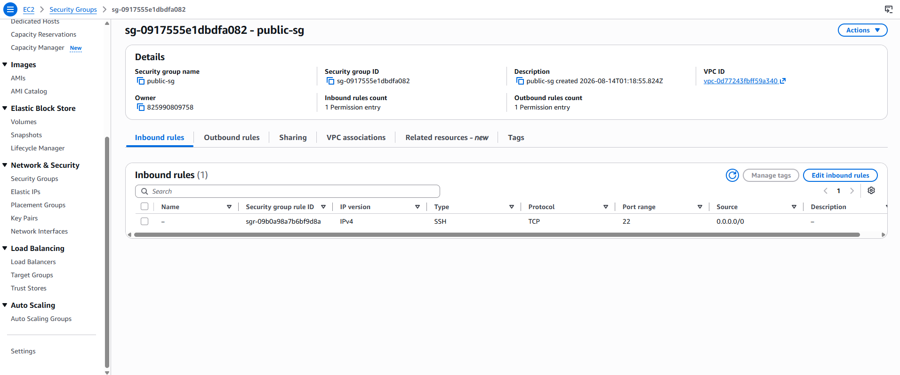
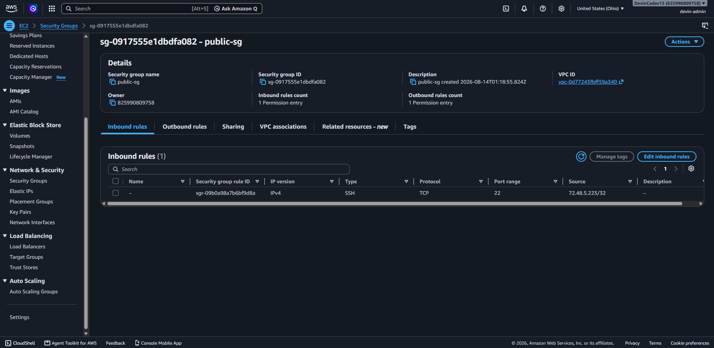

CASE-01 · Cloud Security · AWS
Hardened
AWS Cloud Security Hardening
Built a production-style AWS environment from a brand-new account and hardened it end to end: least-privilege IAM policies with MFA enforcement, billing alarms, a custom VPC with security-group references instead of open CIDRs for private resources, S3 locked down behind a customer-managed KMS key, CloudTrail, and VPC Flow Logs. Documented three real IAM incidents hit during the build — including a self-lockout and an MFA-gated deny blocking policy actions — as the report's core learning narrative. Flow Logs picked up live port-22 scanning traffic within hours of going live.
IAMVPCEC2 Security Groups
S3 + KMSCloudTrailVPC Flow Logs

